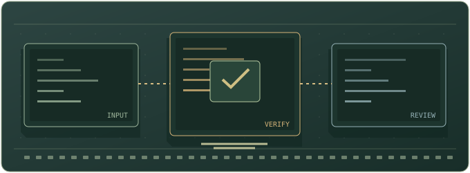

03技能题库
带着问题来，
带着答案走。
102 道分级练习，覆盖 4 个方向、17 项技能。先判断条件，再动手推导，最后用 flag 验证结果。

练习进度
0 / —
CHOOSE A DIRECTION
按方向进入练习
01基础 · 找准一个概念
读清输入、单位与格式，用一个关键知识点得到确定结果。
02进阶 · 串起几步推理
处理边界、顺序与组合条件，解释结果为什么成立。
03挑战 · 验证完整思路
从多条线索或实验反馈中推导答案，再用解析检查遗漏。
EXERCISE INDEX
题目索引
基础 → 进阶 → 挑战
当前条件下没有题目，试试调整筛选。
练习进度仅保存在当前浏览器。